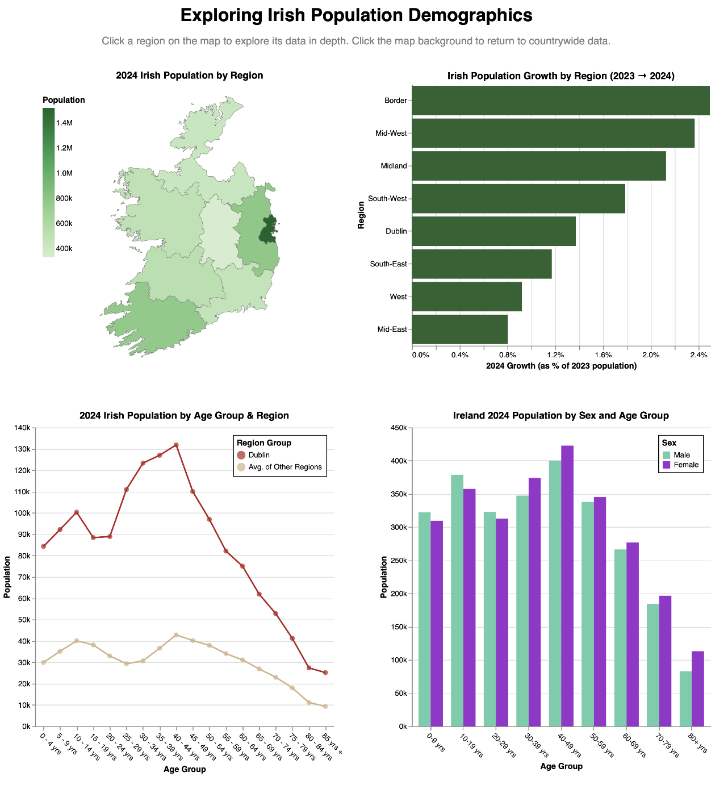
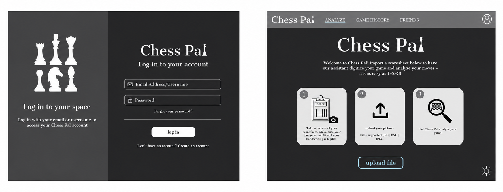
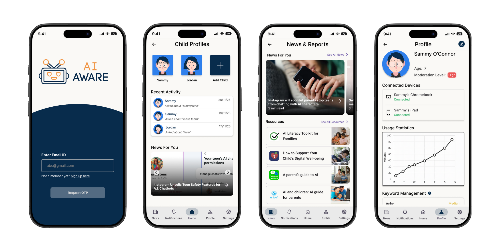
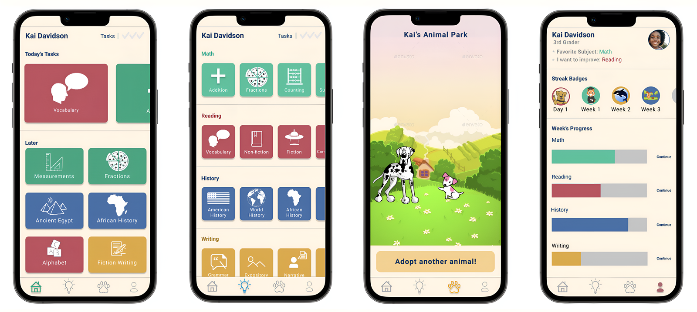

Design
UI/UX design work, from interactive data dashboards to hi-fi mobile and web prototypes. Click on a project for more details!

Interactive dashboard · Vega-Lite
Exploring Irish Population Demographics
An interactive dashboard to explore Irish demographics by region, sex, and age, presented to the Irish Central Statistics Office in January 2026.

Web app prototype · Figma
ChessPal: A Player’s Companion
A companion site prototype for chess players to scan, analyse, and share their games, designed to support play and competition.

Mobile app prototype · Figma
AI Aware: A Parental Monitoring App for Children’s AI Use
A parental control app prototype that flags and limits children’s medical questions to AI chatbots, with adjustable alert intensity per topic.

Mobile app prototype · Figma
Pandai: Gamified Learning
A gamified EdTech prototype where students earn tokens for daily academic practice which they can redeem to collect pets in an interactive “animal park.”